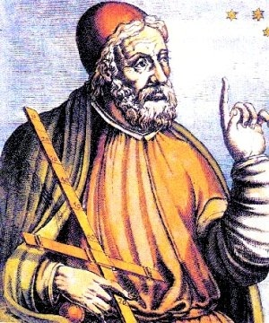

Famous Astronomers
Carl Edward Sagan was an American astronomer, planetary scientist, cosmologist, astrophysicist, astrobiologist, author, and science communicator.

Claudius Ptolemy was a mathematician, astronomer, geographer, astrologer and music theorist, who wrote about a dozen scientific treatises, three of which were of importance to later Byzantine, Islamic, and Western European science.

Galileo di Vincenzo Bonaiuti de' Galilei was an astronomer, physicist and engineer, sometimes described as a polymath, from Pisa, in modern-day Italy.